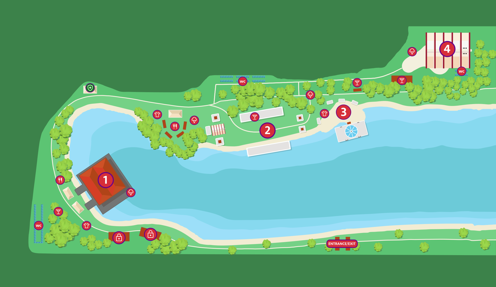

Zaterdag 6 september 2025 • Utrecht
Welkom bij
❤️U Festival
❤️U Festival
Het festival voor (nieuwe) studenten in de regio Utrecht — een aanvulling op UIT. Strijkviertel, Utrecht.
Nieuws & Meldingen
Info
Deuren open om 10:00
Het festivalterrein is geopend van 10:00 tot 23:45 uur. Houd je ticket en ID bij de hand.
Info
Gratis shuttlebus vanaf Utrecht Centraal
Pak de gratis shuttlebus aan de Mineurslaan. Rijdt heen tot 19:00, terug vanaf 21:00.
Info
Lockers beschikbaar op het terrein
Huur een medium of grote locker op het terrein. Niet online te reserveren.
Info
Parkeren: VOL=VOL
Parkeer op P+R Papendorp. Koop je ticket online van tevoren. PIN ONLY bij parkeerwachter.
App op je telefoon
Scan om de app te openen
Scan de QR code met je telefoon om de festival app te openen.
uafestival.onrender.com
Festival Informatie
Festivalprogramma
Festivalkaart
